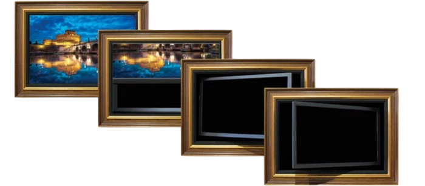

|  | ||||
телевизор в раме как картина, рама для телевизора купить декоративная рамка для телевизора, artscreen Нажатие кнопки пульта и картина в багете поднимается вверх открывается экран телевизора. Телевизор в багете дизайн оформление багет для телевизора, купить заказать современный багет для картины телевизор в багетной раме телевизор за картиной телевизор под картиной купить багет в Москве багетная мастерская печать картин на холсте Спрятать телевизор за картиной Замаскировать телевизор система маскировки телевизора в интерьере |
Конструкция системы ART SCREEN(Арт Скрин). Одно нажатие на кнопку пульта и картина поднимается, открывая спрятанный под ней экран телевизора.
|
 2.Если технически невозможно организовать
нишу нужной глубины, применяется наружная установка. В этом случае телевизор и механизм крепятся к металлическому каркасу, а багетная рама
выступает вперед на толщину устройства. Боковые щели при этом маскируются декоративными панелями. Чтобы уменьшить выступ, рекомендуется
использовать максимально тонкие модели телевизоров.
2.Если технически невозможно организовать
нишу нужной глубины, применяется наружная установка. В этом случае телевизор и механизм крепятся к металлическому каркасу, а багетная рама
выступает вперед на толщину устройства. Боковые щели при этом маскируются декоративными панелями. Чтобы уменьшить выступ, рекомендуется
использовать максимально тонкие модели телевизоров.{kind=link}